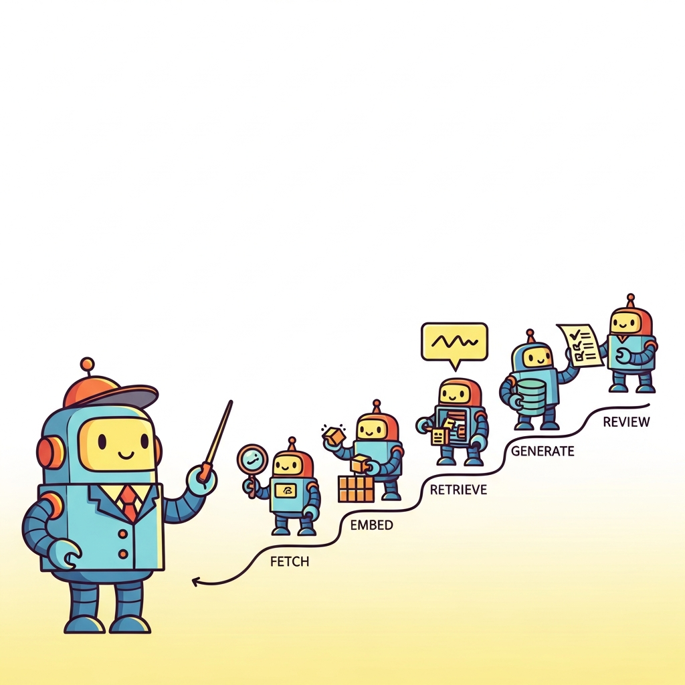

Big Picture
LLM-powered applications often span hours of work , chained tool calls, human review, retries, and long-running document processing. This chapter covers durable workflow engines (Temporal, AWS Step Functions, Airflow) and the patterns that make stateful agent workflows reliable.